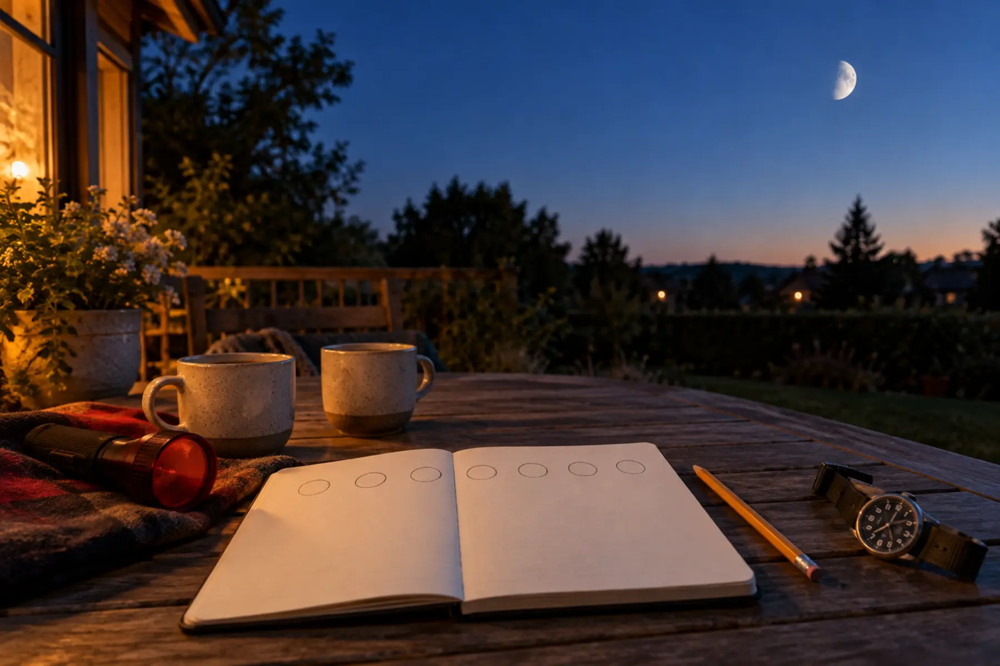

Date + time
Write the date and the actual observation time.
Why: “after dinner” moves; a clock time can be compared.
AT HOME · 10 MINUTES A NIGHT · AGES 6–12 · NO SPEND
Look from one safe place, record what you can actually see, and stop. Seven nights will not reveal the whole lunar cycle—but they can teach a family how observation differs from lookup.

NASA’s Moon Observation Journal uses a month because the changing pattern takes time. Seven consecutive nights are a smaller habit-building experiment. A family may notice the lit shape, position or viewing time change, but one week does not cover every phase and weather may hide several observations.
The goal is not to memorize phase names on night one. It is to separate three things: what the child saw, what conditions affected the view, and what the family looked up afterward. That is real science practice in a form short enough for a school night.
Use seven small sheets or one notebook page, a pencil, a watch or household clock, and a safe place with some sky. A dim flashlight with a red filter can protect night vision while writing, but porch light is fine if it makes the steps safer. Two warm drinks are optional. A telescope, binoculars, phone app and paid kit are not required.
If the family already owns binoculars, keep them put away for the first look. The naked-eye shape and position are the baseline. Later, the family binoculars guide explains fit and steadiness, but no child should point optics near the Sun or use them unsupervised.
The child owns the drawing; the adult owns outdoor safety and the clock. Crooked crescents are data. A parent redrawing the Moon makes a cleaner page and a worse log.
Return at roughly the same time when family life allows it. “Roughly” matters: this is a family routine, not a professional observing campaign. Record the exact time anyway. First ask, “What is different from last night?” Then ask, “Could the difference be our time, our viewpoint, the clouds or the Moon?”
Do not force a phase name. The Moon’s appearance changes as the positions of the Sun, Earth and Moon change; NASA provides the phase diagrams for the explanation. In the notebook, use the family’s observation words first: thin bright curve, half-looking shape, more than half bright, not seen.
On the seventh night, lay out all seven entries and circle one pattern supported by the records. A pattern can be “we saw it later in a different part of the sky,” “the bright part grew,” or simply “clouds blocked three nights.” Then circle one question the week cannot answer.
Cloud night: spend two minutes recording the sky condition and stop. Indoors, look at the prior sketches and predict what might be visible next time; label the prediction. Window version: observe through a safe window without leaning, opening screens or turning off lights needed for stairs. Note that glass and indoor reflections affected the view.
Low-energy version: the adult checks from the door while the child records the time and “visible/not visible.” Very cold version: look for one minute, then draw inside. Sensory-friendly version: skip the timer sound, use the same quiet spot and allow observation without drawing.
Move the entry to the next day only if the family wants to continue; do not double the next session. The family calendar reset can hold the seven tiny windows without turning them into seven appointments.
Use an adult-controlled route and stop walking before looking up. Keep younger children within arm’s reach near steps, driveways and roads. Wear visible clothing when the viewing place is near traffic, but remember the visibility-gear rule: reflective material and lights help drivers detect people; they do not create right of way or make a poor route safe.
Check the National Weather Service before going outside during storms, extreme cold or poor air conditions. Never continue an observation through lightning. Do not climb a roof, tree, fence or vehicle for a better angle. A blocked horizon is a valid condition to record.
Never look at the Sun through binoculars, a telescope, camera viewfinder or any improvised filter. The Moon is often visible during daylight, but a family daytime search must keep all optics put away unless using purpose-built solar equipment under qualified supervision. This activity needs none.
After night seven, open NASA’s Moon Observation Journal. Compare its month-long method with the family’s short log. Which questions require more nights? Which entries need a consistent time? What did cloud cover hide? If interest remains, continue for a month using NASA’s format.
For another short observation habit in daylight, use the 30-minute after-school nature mission. For an indoor light-and-shadow comparison, the flashlight shadow lab works without claiming it is a model of lunar phases.
Use a window or adult-only check when the outdoor route is unsafe, the child is sick, weather is severe or nighttime observation disrupts sleep. Skip the seven-night streak language if missing a day creates anxiety. One careful observation is better than seven forced entries.
Families living with limited sky view can record the obstruction and use NASA’s reference materials afterward. That is still a useful lesson: instruments, access and weather shape what can be observed.
MAKE THE DAY COUNT
Build the plan your family can finish well, then leave enough energy for the next part of the day.
More family plans